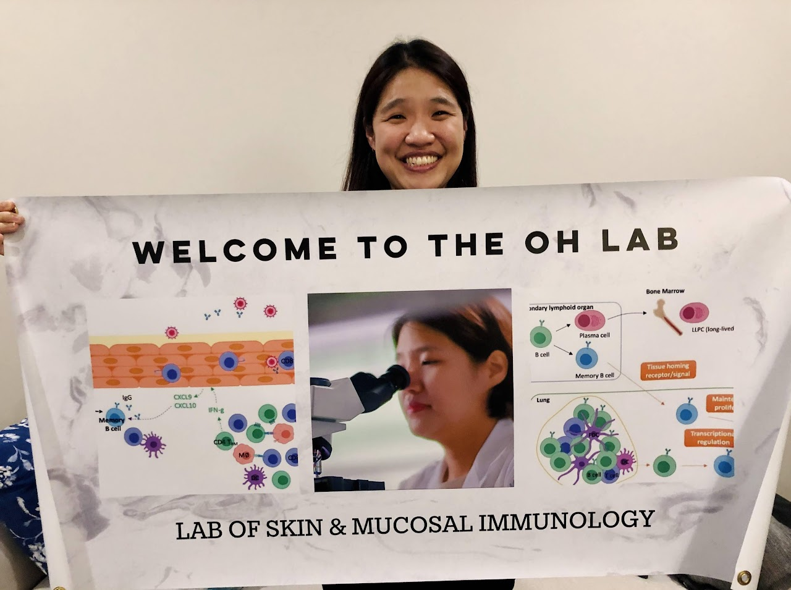

PRINCIPAL INVESTIGATOR
JI EUN OH, M.D., Ph.D.
Position
Principal Investigator
Assistant Professor, Graduate School of Medical Science & Engineering, KAIST
Contact
Office: A905 · Tel: +82-42-350-0230
jieun.oh@kaist.ac.kr
Education
2014 · Ph.D. in Immunology, Graduate School of Medical Science & Engineering, KAIST
2009 · M.S. in Dermatology, College of Medicine, Ewha Womans University
2005 · M.D., College of Medicine, Ewha Womans University (summa cum laude)
Professional Career
2020–present · Assistant Professor, GSMSE, KAIST
2016–2020 · Postdoctoral Associate / Research Scientist, Department of Immunobiology, Yale University
2016 · Assistant Research Professor, GSMSE, KAIST
2015–2016 · Visiting Professor, GSMSE, KAIST
2014–2015 · Postdoctoral Associate, GSMSE, KAIST
2006–2010 · Residency in Dermatology, Ewha Womans University Mokdong Hospital
2005–2006 · Internship, Ewha Womans University Mokdong Hospital
Research
Barrier and mucosal immunology · B cell biology · Tissue-resident immune memory · Humoral immunity